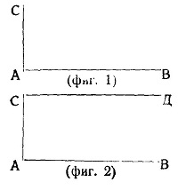
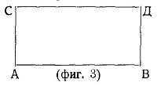

Беседа 1647 от 3877 · Беинса Дуно
Знание и прилагане / Знание и приложение
Размишление
Съвременните хора се стремят към придобиване на знания, но като ги придобият, пак не са доволни. – Защо? – Не могат да приложат придобитите знания. Истинско знание е това, при което човек се ползва разумно със силите на природата. Повечето математици работят с числата, без да се ползват от силите, които се крият в тях. Това показва, че хората говорят за сили и тяхното действие, без да знаят къде са центровете на тия сили. За пример, някой казва, че главата му се надула от страдания. Ако измерите главата на този човек, ще видите, че тя ни най-малко не се е увеличила по обем. Въпреки това, той усеща известна тежест. Истински ученият знае в кой център е станало натрупване на енергия. Колкото и да се увеличи енергията, все пак има известен предел, до който тя може да стигне. Вън от този предел тя трябва или да се трансформира, или да излезе навън. Това се отнася и до числата. За пример, числата 1, 2, 3, 4, 5 съдържат определено и неизменно количество енергия, която нито се увеличава, нито се намалява. Ако тези числа се съединят в едно число, ще получите числото 12,345; ако го увеличите 10 пъти, ще получите числото 123,450. Ако го увеличите 100 и 1000 пъти, ще получите числата 1,234,500 и 12,345,000. Кажем ли, че тия числа съдържат едно и също количество енергия, това подразбира, че килограмът се разделил на грамове, на дециграми, на сантиграми и милиграми. В този случай единиците ще бъдат по-дребни и многобройни, но ще съдържат еднакво количество енергия. Наистина, килограмът и хилядата грама имат еднаква тежест, но различно количество бройни единици. Всяко раздробяване на материята и на енергията подразбира някакъв вътрешен процес.
Съвременните механици изучават действието на природните сили, тяхната големина и посока, за да знаят с какви външни сили да им се противопоставят, т.е. да ги уравновесяват. Думите „съпротива“, „издържане“, „търкане“ подразбират известни сили. В психическия живот пък думата „търпение“ изразява сила, която противодейства на дадено напрежение, външно или вътрешно. Мъчнотиите и несгодите са тежести, които произвеждат напрежение. Казват за някого, че има морален гръбнак, т.е. устоява на мъчнотиите. Моралният гръбнак е лостът, с който човек повдига своите тежести. Колко дебел и як трябва да бъде човешкият лост, за да издържа на тежестите в живота? Тази величина е неизвестна – хикс, и всеки трябва да я реши за себе си. Лостът е свързан с повдигане на тежести. Ето защо, когато говорим за морален гръбнак на човека, имаме предвид тежестта, която му е дадена да носи. Всеки човек носи, както физическа, така и морална тежест. Тежестите на различните хора са различни. Не е добре да бъде човек много тежък, но не е добре да бъде и много лек. Същото се отнася и до моралните тежести. Който е лишен от морални страдания, той няма условия да се развива. Някой се оплаква, че тежки мисли го нападали. Тежките мисли подразбират гъста материя, а леките – лека, рядка материя. Злото, както и отрицателните сили в природата, понижават душевното състояние на човека, вследствие на което той влиза в гъстата материя на живота. Доброто, както и положителните сили на природата, повдигат човека, въвеждат го в областта на рядката материя. Затова, именно, казваме, че доброто всякога си остава добро, а злото – зло. Никой не може да замести доброто със зло, както не можете да заместите стойността на златната монета с медна. По количество можете да ги изравните, но по качество – никога. Златото всякога си остава злато, а медта – мед. Как може да се подобри благосъстоянието на един народ? – Чрез усилване на производството. На първо място стои увеличаване производството на зърнените храни.
Какво представлява производството на една страна? То не е нищо друго, освен съзнателно отношение към числата, като количества на материя и на енергия. За пример, имате числата 1, 2, 3, 4, 5. Ако поставите двойката пред единицата, ще получите числото 21, което е по-голямо от числото 12; ако поставите тройката пред двойката, полученото число 32 ще бъде по-голямо от 23; на същото основание числото 54 е по-голямо от 45. Значи от човека зависи да приложи повече или по-малко благоприятни условия към производството. По-големите числа, носители на повече материя и енергия, дават по-добри резултати, както в материалния, така и в духовния живот на човека. Обаче от значение е още и качеството на материята и на енергията. За пример, човек, като величина в живота, представлява единица, но всички хора се различават по качеството на силите и способностите, вложени в тях. Всички хора произлизат от Адам, но те се различават един от друг по качеството на своите сили и способности. Ако разделите 1:1, 2:2, 3:3, в трите случая ще получите единица. Обаче трите единици се различават по качество една от друга.
Сега, като говорим за качеството на нещата, ние имаме предвид и тяхната динамичност. Една идея може да е възвишена и благородна, т.е. доброкачествена, но да не искате да я приложите. Щом не я прилагате, тази идея умира. Ето защо, стремете се към такива възвишени и благородни идеи, които можете да приложите. Остане ли една от тях във вас, тя ще ви пръсне. – Защо? – Тя крие динамични сили в себе си. Възвишените идеи са динамични. Който ги възприеме, трябва да им даде ход. Те са подобни на бомбите, с които си служат съвременните държави във войните. Ако една бомба има определено време, за да експлодира, колко повече това се отнася за възвишените идеи. От човека се изисква само готовност да даде възможност на една Божествена идея да се реализира, а кога и как ще се реализира, това не е негова работа. Онзи, който слага запалката, знае времето и мястото за реализирането на дадената идея. Противопоставите ли се на тази идея, тя ще експлодира във вас и ще причини големи пакости. Следователно неразположението, страданието, противоречието, които човек изпитва, се дължат именно на това, че той е подпушил Божественото в себе си. Отпушете Божественото във вас, дайте му възможност да излезе навън, да се прояви. Ако не се отворите за Божественото, дълго време ще се намирате под напора на неговите сили, докато един ден то експлодира във вас като бомба и ви пръсне.
Като ученици, вие трябва да изучавате силите, които действат във вас, да знаете къде и как да ги прилагате. Ако силите във вас имат възходяща посока, отворете им път, да излязат навън и да се проявят. Ако не са възходящи, работете върху себе си, да ги трансформирате. – „Какъв ще бъде резултатът на моята дейност?“ – Това не е ваша работа. Ако работите съзнателно и с любов, и в единия, и в другия случай ще имате добри резултати. Природата е точна и изпълнителна. Тя държи точна сметка за своите сили и не позволява да се изразходват напразно. Тя нищо не дава даром, но и нищо не взема даром. Тя дава кредити на хората, но ги следи как разполагат с нейните богатства. Един ден, когато напуснеш земята, природата те спира пред своите митници и прави баланс: толкова си взел, толкова си дал и толкова дължиш. Като види, че не можеш да платиш дълговете си, тя те пуска да заминеш за другия свят, но условно. Сметката ти остава отворена и при второ слизане на земята пак ще ти я поднесат да плащаш.
Ето защо, мъчнотиите и неразположенията на човека не са нищо друго, освен бирници, които носят червения лист, с който ви напомнят, че дължите. – „Ама ще се пръсна от мъка.“ – Много естествено. Имаш да дължиш, не можеш да посрещнеш дълговете си и се страхуваш, че ще се изложиш пред хората. Много причини създават неразположението на човека: или от нямане какво да яде, или като ял, не може да плати. И търговецът е неразположен, когато работите му не вървят добре. – Защо не вървят работите му добре? – По две причини: или стока няма, или има стока, а не може да я пласира. Това е все едно, музикантът да няма на кого да свири, или учителят да няма ученици, на които да преподава.
 
Този закон се отнася и до човешкия ум. Когато казваме, че умът на човека работи, имаме предвид, че се слага някакво начало. Ден след ден се издигат върховете на тази работа, съединяват се един с друг. Ако работата не е свършена, ще видите на постройката поне една отворена врата, през която силите на природата влизат да помагат. Свърши ли се работата, и последната врата се затваря.
Питам: Какви трябва да бъдат пръстите на човешката ръка, за да върши човек работа? Ако на човек с квадратна форма на пръстите възложите задача да прекопае едно лозе, той ще свърши работата добре. Дадете ли същата работа на човек с заострени пръсти, или с мека, нежна ръка, лозето ще остане непрекопано. Това не значи, че пръстите на всички хора трябва да бъдат квадратни. Човешката ръка трябва да се мени, да претърпи поне 4 промени, да мине през всички полета на работа: през физическото, през духовното, през умственото и най-после да влезе в полето на Божествения свят. Като свърши работата си в четирите полета, ръката на човека трябва да приеме естествената си форма. Човешката ръка трябва да се мени всеки ден, всяка минута. Това значи: Човек трябва да прилага в действие всички свои сили, да се развива хармонично. Когато ученият работи няколко часа в умственото поле, той трябва да вземе мотиката и да отиде на лозето или на нивата, да покопае. Перото на учения трябва да се превръща и в мотика или в лопата, с които да обработва земните пластове. Като работи по този начин, човек се свързва с всички хора по земята и им помага.
Когато изучавате вътрешния смисъл на числата, вие идвате до прилагането им в живота, по отношение на самия човек. Всеки човек представлява едно число, четно или нечетно, делимо и на други числа, или само на себе си и на единица. Ще кажете, че не можете да си представите как така човек да бъде число. Дали е вярно това, или не, можете да се убедите само чрез опит, като придобиете вътрешно, положително знание. Външното, това не се доказва. Как познавате, че някой човек е неразположен. На лицето му нищо не е написано; той нищо не говори за неразположението си, а въпреки това, вие се произнасяте за неговото състояние. Не само това, но знаете даже как да му помагнете. Давате му цигулка, започвате да го учите да свири и виждате, че след няколко години той става добър цигулар. Значи вие знаете какво число е той и как може да му се въздейства.
Пак повтарям: Прилагайте знанието, което имате, за да оживее, за да стане ваша плът и кръв. Какъв смисъл имат вашите идеи, ако не се реализират? За да се реализира една идея, преди всичко тя трябва да мине през формите на растителното и животинското царства, докато дойде до човека. Ако идеята ви остане в положението на риба, вечно ще плава; ако остане в положението на птица, вечно ще хвърчи; ако остане в положението на млекопитаещо, ще ходи по земята на 4 крака. Ето защо, тя трябва да мине през човешкото царство, да се възприеме от човека, той да я реализира.
И тъй, истинско знание е онова, което може да се приложи, да се използва за здравето на човека. Забелязано е, че всяко неразположение на човека се дължи на запушване на порите на неговото физическо, сърдечно или астрално и умствено тяло. Като знае това, човек трябва да намери начин да се чисти. Нужна е абсолютна чистота за тялото, за сърцето и за ума. Физическото тяло на човека има около седем милиона пори, които трябва да бъдат отворени. Астралното и умственото тяло също имат много пори, които трябва да бъдат отворени. Ако живее в абсолютна чистота на мисли, чувства и действия, човек ще бъде съвършено здрав. Затова, именно, се препоръчва на всеки човек да се храни с чисти мисли и чувства.
Направете опит, в продължение на 10 дни да живеете в абсолютна чистота, за да схванете разликата между чистия и обикновения живот. Дръжте тялото, ума и сърцето си в чистота. Ще кажете, че чистотата се отнася до стария, т.е. човек трябва да поддържа чистотата си в старини. Докато е млад, и без това той е здрав. Старият трябва да поддържа чистота, за да бъде здрав. Не е така. Според мене няма разлика между стар и млад човек. И младият, и старият трябва да живеят в чистота. Когато мисли право, човек е стар. Не може ли и младият да мисли право? И младият, и старият трябва да бъдат доволни от положението си, да не изискват повече богатства и блага от тези, които им са дадени. Ако имат някакви неуспехи и мъчнотии, нека свирят. – Какво прави цигуларят, когато се намери пред известно затруднение? – Той взима цигулката и свири. Вземете и вие вашата цигулка – сърцето си, и започнете да свирите. Впрегнете ума си на работа, т.е. вашия цигулар, и свирете. Ако не свирите и не учите, ще се обезсърчите. Всяко обезсърчаване води към големи противоречия. Съзнателната работа ще ви спаси от мъчнотиите в живота.
Като слушат да се говори за работа, за учене, някои казват, че Бог ще помисли за всичко, няма защо да се безпокоим. И това е вярно. Обаче като мисли за човека, Бог изпраща при него някой ангел, който му казва: „Стани, започни да работиш!“ Който чуе този глас, трябва да стане и да започне работата си. Желая ви да чуете гласа на ангела, който ви подтиква към работа и учене. Той ви събужда тихо с думата: „Стани!“
Само светлият път на Мъдростта води към Истината.
В Истината е скрит животът.
Лекция от Учителя, държана на 27 март 1931 г., София, Изгрев.